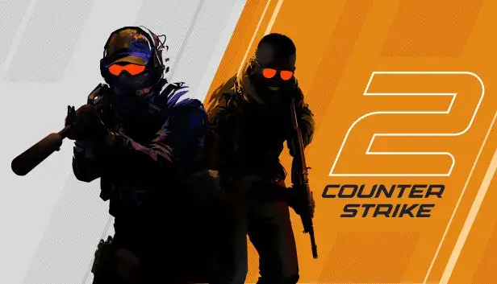

Gaming: Moje Światy
Gry to dla mnie nie tylko rozrywka, ale wyzwanie strategiczne i techniczne.
Terraria
Eksploracja i budowanie w pikselowym świecie to czysty relaks połączony z kreatywnością.

Counter-Strike
Rywalizacja i praca zespołowa. Tutaj liczy się każda sekunda i precyzja.

GODOT
Godot to darmowy silnik do gier 2D i 3D, z własnym językiem skryptowym (GDScript), wizualnym edytorem scen, systemem nodów i wbudowanymi narzędziami do animacji, fizyki i eksportu na wiele platform (PC, mobile, web).

Info Godot